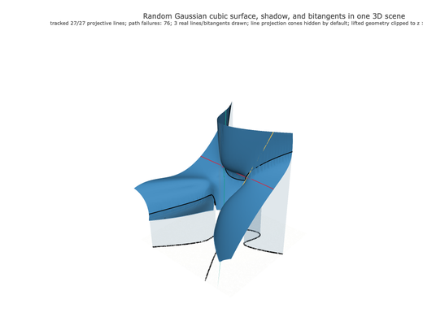

Seed 1
3 real lines
- Tracked
- 27/27
- Path failures
- 76
- Newton starts
- 298
f = 0.134 x*z^2 +0.319 y*z^2 +0.128 z^2 -0.506 x^2*z +0.352 x*y*z +0.173 x*z -0.209 y^2*z +0.226 y*z +0.142 z +0.114 x^3 +0.011 x^2*y +0.212 x^2 -0.286 x*y^2 -0.0633 x*y -0.187 x +0.233 y^3 +0.0154 y^2 -0.114 y -0.304 1